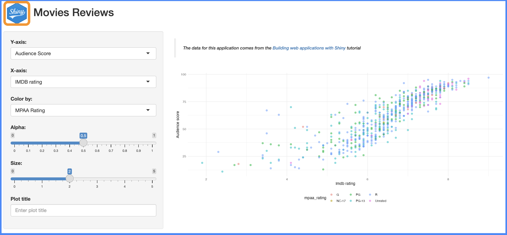

dplyr::glimpse(
fst::read_fst(path =
system.file("extdata/", "movies.fst", package = "pkgApp")
)
)
inst/ & www/
Caution!
This section is currently being revised. Thank you for your patience.
The inst/ folder plays a special role in R packages, and can be incredibly helpful for app-packages. In the previous chapter we covered including external datasets in the inst/extdata/ folder and accessing these files with system.file(). In this chapter we’ll cover how to add external resources (i.e., the files stored in the www/ folder of your shiny app project) to your shiny app-packages.
pkgApp
The current structure of pkgApp is below:
pkgApp/
├── DESCRIPTION
├── NAMESPACE
├── R/
│ ├── data.R
│ ├── mod_scatter_display.R
│ ├── mod_var_input.R
│ ├── movies_app.R
│ ├── movies_server.R
│ ├── movies_ui.R
│ └── scatter_plot.R
├── README.md
├── app.R
├── data/
│ └── movies.RData
├── inst/
│ └── extdata
│ └── movies.fst
├── man/
│ ├── mod_scatter_display_server.Rd
│ ├── mod_scatter_display_ui.Rd
│ ├── mod_var_input_server.Rd
│ ├── mod_var_input_ui.Rd
│ ├── movies.Rd
│ ├── movies_app.Rd
│ ├── movies_server.Rd
│ ├── movies_ui.Rd
│ └── scatter_plot.Rd
├── pkgApp.Rproj
└── www/
└── shiny.png
7 directories, 24 filesWhen we run movies_app(), we see the following:

movies_app() without logowww not accessible in pkgAppThe shiny.png logo in www/ is not being loaded into the UI when the application is launched. Before we dive into adding the contents of www/ into our app-package, we’ll take a step back and investigate what happens when pkgApp is installed.
What’s in the ‘installed’ package?
We’ve been running load_all(), document(), and install() on pkgApp, but we haven’t looked at the contents of the installed package. Reviewing the installed package will help us understand what the system.file() function is doing, and how we can use the inst/ folder to include external resources to our app-package.
When we run devtools::install(), the output tells us where the package is being installed:
==> R CMD INSTALL --preclean --no-multiarch --with-keep.source pkgApp
* installing to library ‘/path/to/install/Library/R/x86_64/4.2/library’If we add the pkgApp/ directory to the end of the path above, we can view the contents of the installed package (I’m using the tree command in the Terminal, but the fs::dir_tree() function will also print a folder tree):
/path/to/install/Library/R/x86_64/4.2/library/pkgApp/
├── DESCRIPTION
├── INDEX
├── Meta/
│ ├── Rd.rds
│ ├── data.rds
│ ├── features.rds
│ ├── hsearch.rds
│ ├── links.rds
│ ├── nsInfo.rds
│ └── package.rds
├── NAMESPACE
├── R/
│ ├── pkgApp
│ ├── pkgApp.rdb
│ └── pkgApp.rdx
├── data/
│ ├── Rdata.rdb
│ ├── Rdata.rds
│ └── Rdata.rdx
├── extdata/
│ └── movies.fst
├── help/
│ ├── AnIndex
│ ├── aliases.rds
│ ├── paths.rds
│ ├── pkgApp.rdb
│ └── pkgApp.rdx
└── html/
├── 00Index.html
└── R.css
7 directories, 24 filesThe installed version of pkgApp has many of the same files as the ‘source’ version we’ve been writing (i.e., the NAMESPACE and DESCRIPTION). It also might surprise you to see that many of the source package files aren’t included in the installed version (.R, .Rd files. etc.). The key takeaway here is that the inst/ subfolders and files are available in the installed version unchanged (with the inst/ folder omitted.).
Hopefully viewing this folder structure helps demystify what happens when a package is installed. Below is the official documentation on what happens to the inst/ folder (and it’s subfolders) when a package is installed:
“The contents of the
inst/subdirectory will be copied recursively to the installation directory. Subdirectories ofinst/should not interfere with those used by R (currently,R/,data/,demo/,exec/,libs/,man/,help/,html/andMeta/, and earlier versions usedlatex/,R-ex/).” - Writing R extensions, Package subdirectories
Other installed package structures
You can explore the structure of other installed packages to see how they work ‘under the hood’ to gain insight into how they use the inst/ folder.
-
For example, the
inst/extdata/folder in thereadrpackage holds a variety of datasets:/path/to/install/Library/R/x86_64/4.2/library/readr/ extdata/ ├── challenge.csv ├── chickens.csv ├── epa78.txt ├── example.log ├── fwf-sample.txt ├── massey-rating.txt ├── mini-gapminder-africa.csv ├── mini-gapminder-americas.csv ├── mini-gapminder-asia.csv ├── mini-gapminder-europe.csv ├── mini-gapminder-oceania.csv ├── mtcars.csv ├── mtcars.csv.bz2 ├── mtcars.csv.zip └── whitespace-sample.txt 1 directory, 15 files -
These files are used in
readr::readr_example()(inR/example.R):#' Get path to readr example #' #' readr comes bundled with a number of sample files in its `inst/extdata` #' directory. This function make them easy to access #' #' @param file Name of file. If `NULL`, the example files will be listed. #' @export #' @examples #' readr_example() #' readr_example('challenge.csv') readr_example <- function(file = NULL) { if (is.null(file)) { dir(system.file('extdata', package = 'readr')) } else { system.file('extdata', file, package = 'readr', mustWork = TRUE) } }
How system.file() works
system.file() gives us access to the package files on installation (i.e., the files we see at the path above). In the previous chapter, we used system.file() to access the movies.fst file in inst/extdata/:
show/hide glimpse() of movies.fst
fstcore package v0.9.14
(OpenMP was not detected, using single threaded mode)
Rows: 651
Columns: 34
$ title <chr> "Filly Brown", "The Dish", "Waiting for…
$ title_type <fct> Feature Film, Feature Film, Feature Fil…
$ genre <fct> Drama, Drama, Comedy, Drama, Horror, Do…
$ runtime <dbl> 80, 101, 84, 139, 90, 78, 142, 93, 88, …
$ mpaa_rating <fct> R, PG-13, R, PG, R, Unrated, PG-13, R, …
$ studio <fct> Indomina Media Inc., Warner Bros. Pictu…
$ thtr_rel_date <dttm> 2013-04-18 21:00:00, 2001-03-13 21:00:…
$ thtr_rel_year <dbl> 2013, 2001, 1996, 1993, 2004, 2009, 198…
$ thtr_rel_month <dbl> 4, 3, 8, 10, 9, 1, 1, 11, 9, 3, 6, 12, …
$ thtr_rel_day <dbl> 19, 14, 21, 1, 10, 15, 1, 8, 7, 2, 19, …
$ dvd_rel_date <dttm> 2013-07-29 21:00:00, 2001-08-27 21:00:…
$ dvd_rel_year <dbl> 2013, 2001, 2001, 2001, 2005, 2010, 200…
$ dvd_rel_month <dbl> 7, 8, 8, 11, 4, 4, 2, 3, 1, 8, 5, 9, 7,…
$ dvd_rel_day <dbl> 30, 28, 21, 6, 19, 20, 18, 2, 21, 14, 1…
$ imdb_rating <dbl> 5.5, 7.3, 7.6, 7.2, 5.1, 7.8, 7.2, 5.5,…
$ imdb_num_votes <int> 899, 12285, 22381, 35096, 2386, 333, 50…
$ critics_rating <fct> Rotten, Certified Fresh, Certified Fres…
$ critics_score <dbl> 45, 96, 91, 80, 33, 91, 57, 17, 90, 83,…
$ audience_rating <fct> Upright, Upright, Upright, Upright, Spi…
$ audience_score <dbl> 73, 81, 91, 76, 27, 86, 76, 47, 89, 66,…
$ best_pic_nom <fct> no, no, no, no, no, no, no, no, no, no,…
$ best_pic_win <fct> no, no, no, no, no, no, no, no, no, no,…
$ best_actor_win <fct> no, no, no, yes, no, no, no, yes, no, n…
$ best_actress_win <fct> no, no, no, no, no, no, no, no, no, no,…
$ best_dir_win <fct> no, no, no, yes, no, no, no, no, no, no…
$ top200_box <fct> no, no, no, no, no, no, no, no, no, no,…
$ director <chr> "Michael D. Olmos", "Rob Sitch", "Chris…
$ actor1 <chr> "Gina Rodriguez", "Sam Neill", "Christo…
$ actor2 <chr> "Jenni Rivera", "Kevin Harrington", "Ca…
$ actor3 <chr> "Lou Diamond Phillips", "Patrick Warbur…
$ actor4 <chr> "Emilio Rivera", "Tom Long", "Eugene Le…
$ actor5 <chr> "Joseph Julian Soria", "Genevieve Mooy"…
$ imdb_url <chr> "http://www.imdb.com/title/tt1869425/",…
$ rt_url <chr> "//www.rottentomatoes.com/m/filly_brown…To include the contents of www/ in our app-package, we need to use isnt/ folder, system.file(), and the shiny::addResourcePath() function.
addResourcePath()
shiny’s addResourcePath() function will add a “directory of static resources to Shiny’s web server.” In pkgApp, want to add the www directory that includes the shiny.png file (currently in our root (".") folder).
If we want to continue using the www/ folder name, we can simply move www and it’s contents into inst/:
inst/
├── extdata
│ └── movies.fst
└── www/
└── shiny.png
3 directories, 2 filesIn R/movies_ui.R function, we’ll include the addResourcePath() at the top of the tagList() and reference the image in img() using only the subfolder in the path:
movies_ui <- function() {
shiny::addResourcePath('www', system.file('www', package = 'pkgApp'))
shiny::tagList(
shiny::fluidPage(
shiny::titlePanel(
shiny::div(
shiny::img(
src = "www/shiny.png",
height = 60,
width = 55,
style = "margin:10px 10px"
),
"Movies Reviews"
)
),
shiny::sidebarLayout(
shiny::sidebarPanel(
mod_var_input_ui("vars")
),
shiny::mainPanel(
mod_scatter_display_ui("plot")
)
)
)
)
} After loading, documenting, and installing, the application now includes the image file.
Ctrl/Cmd + Shift + L / D / B
library(pkgApp)
movies_app()
movies_app() with logoinst/www accessible with addResourcePath()You can read more about adding external resources in the documentation for addResourcePath(). We’ll also cover adding CSS and JavaScript files in later chapters.

Recap
Recap:
inst & www folders
inst/: theinst/folder is installed with your app-package and will be accessible to users, so it’s a great location for files you want to contained in your app, but don’t fit into the standard R package structure.system.file(): constructs a path to files or folders within installed packages. Thesystem.file()function is especially useful when working with external datasets (i.e.,inst/extdata/) or other external resources included with your app-package (i.e.,inst/www/).www: used for external static resources in shiny apps. shiny will automatically serve files under thewww/directory, but in app-packages we need to explicitly set this location withshiny::addResourcePath()-
addResourcePath(): create a prefix (path) for adirectoryPathof static files to accessible in shiny’s web server:# file location inst/ └── www/ └── shiny.png# add path addResourcePath('www', system.file('www', package='pkgApp')) # use path shiny::img(src = 'www/shiny.png')
end inst.qmd